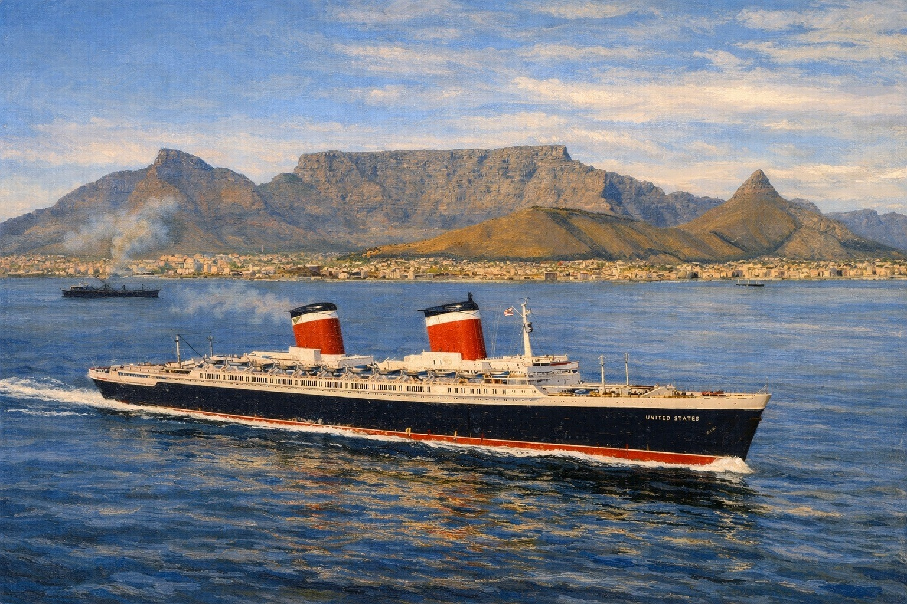

SS United States — Specifications, Scale, and Comparison
A factual grounding page for America’s most famous express liner: her size, principal dimensions, power, passenger capacity, and the record-breaking speed that made her more than a large ship alone.
The aim here is not simply to list numbers, but to separate length, tonnage, horsepower, service speed, and public reputation into clearer historical categories.

Speed was the headline
SS United States was not just large by American standards. Her identity was built around power, speed, fire-safety discipline, and the symbolic claim that the United States could build a liner equal to the great Atlantic powers.
Principal specifications
These are the figures most readers look for first. Exact published numbers can vary slightly by source and measuring convention, especially when comparing design figures, trials performance, commercial service, and later preservation summaries.
Operator
United States Lines
Builder
Newport News Shipbuilding and Dry Dock Company
Gross tonnage
About 53,300 GRT
Length overall
990 feet
Beam
101 feet 6 inches
Service speed
About 33 knots
Maximum trial speed
About 38.32 knots
Passenger capacity
About 2,000 passengers
Entered service
1952
Propulsion
Steam turbine, quadruple screw
SS United States is a good example of why specifications need careful labeling. Her gross tonnage does not explain her reputation by itself; her speed, machinery, fire-safety design, and national symbolism all matter just as much.
What those numbers actually mean
The most important thing to understand about SS United States is that she was not famous simply because she was big. She was large, certainly, and remains the largest passenger ship built in the United States. But on the world stage, her deeper claim was speed: she was designed as a high-powered express liner capable of winning the Atlantic speed record and sustaining a demanding schedule.
Gross tonnage measures enclosed volume, not weight. Length describes physical scale, but not interior arrangement. Horsepower tells us something about machinery, but not comfort or prestige. Speed tells us something about operational ambition, but not the whole passenger experience. The ship becomes clearer when those measurements are allowed to remain distinct.
That distinction is especially important for the “Big U.” She was not the largest liner of the twentieth century, nor the most ornate, nor the most romantically remembered by the general public. Her greatness rests elsewhere: American engineering, naval-influenced design discipline, fire-conscious construction, and a transatlantic speed record that still shapes her historical identity.
How SS United States compared
Comparison is where the specifications become more useful. This table is not meant to declare a single “best” liner, but to place SS United States among several ships that help explain her scale, generation, and reputation.
| Ship | Approx. gross tonnage | Approx. length | Approx. service speed | General context |
|---|---|---|---|---|
| SS United States | ~53,300 GRT | 990 ft | ~33 knots | America’s record-breaking postwar express liner, defined by power, speed, fire-safety discipline, and national prestige. |
| RMS Queen Mary | ~81,000 GRT | ~1,019 ft | ~28.5 knots | Larger and older, but slower in normal service; a useful contrast between interwar British scale and postwar American speed. |
| RMS Queen Elizabeth | ~83,000 GRT | ~1,031 ft | ~28.5 knots | A larger Cunard counterpart whose scale helps show that United States’ fame cannot be reduced to size alone. |
| SS Normandie | ~79,000 GRT | ~1,029 ft | ~29–30 knots | A prewar French prestige liner remembered for design, size, and speed, but from a different cultural and technical moment. |
| RMS Olympic | ~45,000 GRT | ~882 ft | ~21–22 knots | Smaller and slower, but a valuable benchmark for how far liner expectations changed between the Edwardian and postwar eras. |
The comparison makes the point clearly: SS United States was not the largest of these ships, but she was among the most technically aggressive. Her historical identity depends on speed and engineering more than on sheer enclosed volume.
Scale in historical context
Large, but not just large
At 990 feet, SS United States had undeniable physical presence. Yet her place in history depends less on being the biggest liner and more on what her hull and machinery were designed to do.
Power was part of the message
Her propulsion plant was central to her identity. The ship projected American technical confidence at a moment when the Atlantic liner still carried diplomatic, commercial, and cultural weight.
A postwar ship with wartime logic
She was a passenger liner, but her design was shaped by the possibility of rapid troopship conversion. That dual purpose helps explain her disciplined materials, layout, and engineering philosophy.
A liner at the edge of the jet age
SS United States entered service in 1952, which places her very late in the great transatlantic liner story. She was not an Edwardian palace ship and not an interwar Art Deco statement in the manner of Normandie. She belonged to a postwar world in which speed, safety, national prestige, and military readiness were all bound together.
That timing matters. The ship arrived when ocean liners still mattered enormously, but when commercial aviation was beginning to change the economics of long-distance passenger travel. Her specifications therefore carry a kind of historical tension: she was the culmination of one tradition and, almost immediately, evidence of how difficult that tradition would be to sustain.
In that sense, SS United States is one of the clearest reference anchors for the final high-performance phase of North Atlantic liner competition. Her numbers are not just measurements; they are evidence of what a nation, a designer, and a shipping line still believed an ocean liner could represent.
What the evidence supports — and what it does not
The evidence comfortably supports calling SS United States the largest passenger ship built in America and the fastest transatlantic liner in historical memory. It also supports reading her as an unusually powerful, technically sophisticated ship whose design was shaped by more than ordinary passenger-service requirements.
The evidence does not require every claim about her to be inflated into a universal superlative. She was not the largest liner in the world, and her reputation does not need that claim. Her real distinction is stronger: she joined commercial service as a record-breaking express liner whose speed, machinery, and national symbolism made her unlike any other American passenger ship.
For Ocean Liner Curator, that is the cleaner interpretation: let the measurable figures stand, then explain why the most important conclusion is not simply “big,” but “fast, powerful, and deliberately American.”
Claims about “largest,” “fastest,” or “greatest” often hide several different criteria inside one word. This page keeps those criteria visible so the ship can be admired without flattening the evidence.
Go deeper into SS United States
This page works best as a reference anchor. Pair it with the ship’s interiors, service story, and preservation history for a fuller reading of what the “Big U” meant.
Next steps within the SS United States cluster